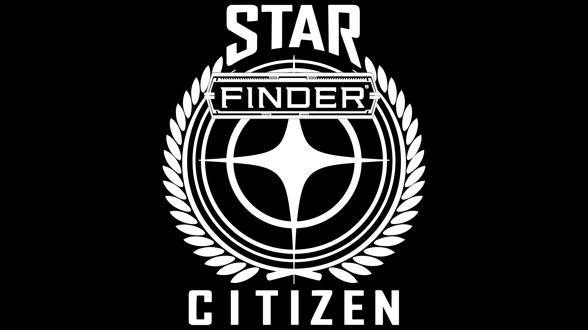

Welcome to StarFinder Citizen

What is Starfinder Citizen
Starfinder-citizen is a labor of love from the Star Citizen community wanting an extra level of roleplay for a game they passionately support. Based on the Paizo Publishing game Starfinder we're giving you the tools you need to take your tabletop rpg into the 'verse staring with the Stanton System and beyond
Credit where Credit is due
Since we couldn't actually make this happen without the original IP of two amazing companies and games I highly encourage you to spend the time and money supporting those projects. As such we're only going to include the Starfinder Citizen specific information here, everything else will be found in the systems.
Star Citizen Paizo - Starfinder
What you will Need
You will need the core starfinder rulebook from Paizo in order to effectively play the game.
Disclaimer and Copywright notices
This is system currently is not monetized in any way and is meant to provide another element of gameplay to this amazing community to experience the verse that we love.
Star Citizen
This is an unofficial Fansite and in no way officially represents the current state of the Star Citizen or represents Cloud Imperium Games in any fashion. Use of the IP from CIG is through the Terms of Service XII Part D - Personal and Fansite Use.
Starfinder
Compatibility with the Starfinder Roleplaying Game requires the Starfinder Roleplaying Game from Paizo Inc. See http://paizo.com/starfinder for more information on the Starfinder Roleplaying Game. Paizo Inc. does not guarantee compatibility, and does not endorse this product.
Starfinder is a registered trademark of Paizo Inc., and the Starfinder Roleplaying Game and the Starfinder Roleplaying Game Compatibility Logo are trademarks of Paizo Inc., and are used under the Starfinder Roleplaying Game Compatibility License. See http://paizo.com/starfinder/compatibility for more information on the compatibility license.
Open Game License v 1.0a Copyright 2000, Wizards of the Coast, Inc. System Reference Document. Copyright 2000, Wizards of the Coast, Inc.; Authors Jonathan Tweet, Monte Cook, Skip Williams, based on material by E. Gary Gygax and Dave Arneson. Starfinder Core Rulebook. © 2017, Paizo Inc.; Authors: Logan Bonner, Jason Bulmahn, Amanda Hamon Kunz, Jason Keeley, Robert G. McCreary, Stephen Radney-MacFarland, Mark Seifter, Owen K.C. Stephens, and James L. Sutter, with Alexander Augunas, Judy Bauer, John Compton, Adam Daigle, Crystal Frasier, Lissa Guillet, Thurston Hillman, Erik Mona, Mark Moreland, Jessica Price, F. Wesley Schneider, Amber E. Scott, and Josh Vogt.
Starfinder and associated marks and logos are trademarks of Paizo Inc., and are used under license. See paizo.com/starfinder for more information on the Starfinder Roleplaying Game.